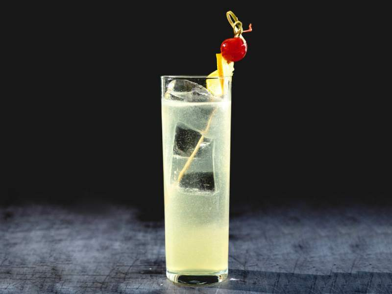

Tom Collins Cocktail
Best easy recipe
Prep time: 5 minutes
Cook time: 0 minutes
Total time: 5 minutes
Instructions
- Add the gin, syrup and lemon juice to a cocktail shaker with 4 ice cubes. Shake well until chilled.
- Strain the liquid into an ice filled glass, and top off the glass with soda water. Garnish with a lemon wheel and cocktail cherry.

Ingredients
- 2 ounces (4 tablespoons) dry gin
- 3/4 to 1 ounce (1 1/2 to 2 tablespoons) simple syrup or maple syrup
- 1 ounce (2 tablespoons) lemon juice
- Ice
- For the garnish: maraschino cherry, lemon wheel